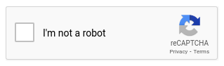

Uso de Jekyll con Docker
En ocasiones, trabajar en local con Jekyll y, a continuación, subir los cambios a GitHub para la generación automática del sitio web es muy útil. Así, podemos visualizar el resultado antes de su puesta en producción en GitHub Pages. El objeto de esta lección es mostrar cómo hacerlo.
Al finalizar, sabrá:
-
Cómo utilizar una imagen de Docker para trabajar con Jekyll en local.
-
Cómo usar los comandos bundle y jekyll.
-
Cómo usar la variable de entorno JEKYLL_ENV para generar el sitio web para producción.
-
Qué es el archivo Gemfile.
-
Cómo publicar un sitio Jekyll local en la red Tor.
Introducción
En algunos proyectos, resulta extremadamente útil visualizar el sitio web en local, en vez de subirlo a GitHub Pages y ver cómo queda. No suele ser buena práctica desplegar el sitio en producción y ver si nos gustan los cambios realizados, mientras los usuarios tienen acceso a él. Por esta razón, es recomendable saber trabajar con Jekyll en local. Y la mejor manera de hacerlo es con Docker, concretamente con la imagen jekyll/jekyll, la cual se encuentra en el registro oficial de Docker, https://hub.docker.com/r/jekyll/jekyll.
Esta imagen presenta varias etiquetas como, por ejemplo, latest, 4 o pages. En nuestro caso, usaremos pages, cuyo tamaño aproximado, en el momento de escribir estas líneas, es de 110M.
Descarga de la imagen
En primer lugar, descargaremos la imagen del registro como sigue:
$ sudo docker pull jekyll/jekyll:pages
Ejecución de sitios webs con la imagen de Docker
El comando jekyll viene con varios comandos como, por ejemplo, jekyll build o jekyll serve. jekyll build lo que hace es generar el sitio web estático. En cambio, jekyll serve lo genera y, además, ejecuta el servidor web WEBrick con el que lo sirve en el puerto 4000. Este servidor no es el que utiliza GitHub Pages, pero sí el usado por Jekyll de manera predeterminada. Cualquier configuración que pongamos en el archivo de configuración _config.yaml en su propiedad webrick no se tendrá en cuenta en GitHub Pages. No lo olvide.
La manera más sencilla de ejecutar Jekyll desde un contenedor de Docker es mediante el siguiente comando:
$ sudo docker run --name jekyll -p 4000:4000 -it --rm \
-v $PWD:/srv/jekyll \
jekyll/jekyll:pages \
bash -c "bundle update && bundle exec jekyll s --verbose --trace --host 0.0.0.0 --incremental"
Si todo va bien, en el log, debería ver algo similar a:
[2023-01-28 01:59:55] DEBUG unmount .
[2023-01-28 01:59:55] DEBUG Jekyll::Commands::Serve::Servlet is mounted on .
Server address: http://0.0.0.0:4000
[2023-01-28 01:59:55] INFO WEBrick::HTTPServer#start: pid=41 port=4000
Server running... press ctrl-c to stop.
Punto de montaje del directorio del sitio
En primer lugar, como el código del sitio se encuentra en local, lo que tenemos que tener claro es que hay que montar un volumen en el contenedor que haga referencia a nuestro directorio del sitio. Este montaje lo haremos en /srv/jekyll que es donde Jekyll espera encontrar el directorio del sitio como, por ejemplo:
-v $PWD:/srv/jekyll
Archivo Gemfile
Cuando ejecutamos el sitio web en local, necesitaremos un archivo Gemfile (Gemfile file), ubicado en el directorio del sitio, un archivo Ruby, lenguaje en el que se encuentra escrito Jekyll, el cual proporciona metadatos sobre el sitio como, por ejemplo, las dependencias a instalar. No es muy complejo y le puede bastar con algo como lo siguiente:
source "https://rubygems.org"
# Jekyll
gem "jekyll", "~> 3.9.3"
gem "minima", "~> 2.5.1"
gem "kramdown-parser-gfm", "~> 1.1.0"
# Local webserver
gem "webrick"
# Plugins
group :jekyll_plugins do
gem "jekyll-remote-theme", "~> 0.4.3"
gem "jekyll-feed", "~> 0.15.1"
gem "jekyll-sitemap", "~> 1.4.0"
end
Cada vez que utilice un plugin, no olvide venir aquí y añadir su gema (gem), la cual se suele indicar en la documentación del propio plugin. Una gema (gem) no es más que el paquete que implementa una funcionalidad en Ruby. Es como un paquete de NPM. Con las gemas, en Jekyll, se implementan tanto funcionalidades como temas.
Adicionalmente, cuando haya arrancado el servidor, aparecerá un archivo Gemfile.lock, su objetivo es similar al package-lock.json de Node.js.
Si necesita conocer las versiones exactas de las dependencias actuales de GitHub Pages, consulte https://pages.github.com/versions.
Comando bundle
El comando bundle, que viene de fábrica con la imagen de Docker, es un gestor de paquetes de Ruby. Nada más comenzar la ejecución, indique que realice una actualización con bundle update. Por otra parte, ejecute el comando jekyll con el comando bundle exec.
Comando jekyll build
El comando jekyll build, también conocido como jekyll b, tiene como objeto generar la web a partir del directorio del sitio. Debido a que jekyll serve realiza esta función y además sirve en local el sitio web generado, es posible que no lo use más que en contadas ocasiones. Personalmente, lo uso cuando tengo un proyecto en el que entre la generación y el servicio tengo que hacer alguna cosa como, por ejemplo, copiar algún archivo extra al directorio _site generado.
Variable de entorno JEKYLL_ENV
En ocasiones, tenemos que usar una versión de Jekyll superior a la soportada por GitHub Pages, por ejemplo, para poder usar alguna nueva funcionalidad. En estos casos, estaremos ante un sitio web pregenerado que acabaremos publicando con un flujo de GitHub Actions. Es muy importante hacer uso de la variable de entorno JEKYLL_ENV para indicar que deseamos generar el sitio web para producción. Si no indicamos explícitamente JEKYLL_ENV=production, se generará para desarrollo y, por ejemplo, no se añadirá la etiqueta de seguimiento de Google Analytics, si la tenemos configurada en el archivo de configuración _config.yaml. He aquí un ejemplo ilustrativo de una línea de comandos con la que solicitar la generación del sitio web para producción:
sudo docker run --name jekyll -v $PWD:/srv/jekyll -it --rm jekyll/jekyll:pages bash -c 'bundle update && bundle exec jekyll clean && JEKYLL_ENV=production bundle exec jekyll b'
Comando jekyll serve
El comando jekyll serve, también ejecutable mediante jekyll s, lo que hace es generar el sitio web a partir del directorio del sitio y, a continuación, servirlo, en nuestro caso, con WEBrick. Jekyll genera el sitio web estático en el directorio _site del directorio del sitio. Adicionalmente, también genera otros directorios y archivos en el directorio del sitio como, por ejemplo, .jekyll-cache, .sass-cache y .jekyll-metadata. Es común que tengamos estos directorio en el .gitignore:
_site/
.jekyll-cache/
.sass-cache/
.jekyll-metadata
Debemos ejecutar el comando con bundle exec y es recomendable conocer las siguientes opciones de jekyll serve:
| Opción | Descripción |
|---|---|
--host 0.0.0.0 |
Indica la dirección IP donde escuchará. Indique 0.0.0.0 si está ejecutando Jekyll en un contenedor y necesita acceder desde su propio equipo. |
--incremental |
Indica que, en caso de cambio de una página o artículo, sólo regenere esa página o artículo afectado. |
--verbose |
Proporciona información de log de Jekyll por la terminal. |
--trace |
En caso de que se produzca un error, indicará dónde se produjo. |
jekyll s monitoriza el directorio del sitio, montado en /srv/jekyll, y regenera todo el sitio cada vez que se produzca un cambio.
Con la opción --incremental o -I, sólo regenerará la página o artículo cambiado.
En ocasiones, esto es muy útil, pero en otras no lo es tanto, porque sólo se centra en la página o artículo que hemos modificado.
En caso de duda, le recomiendo que no use la opción --incremental, aunque muy probablemente acabará usándola a medida que se encuentre cómodo con Jekyll y su idiosincrasia.
En el momento de escribir estas líneas, cualquier cambio al archivo de configuración no se tiene en cuenta. Esto nos obligará a tener que reiniciar Jekyll. Por favor, téngalo muy en cuenta.
No olvide que el servidor web de Jekyll escucha en el puerto 4000.
Opción --skip-initial-build
Cuando se usa el comando jekyll build antes del servicio, es muy común utilizar la opción --skip-initial-build del comando jekyll serve.
Esta opción lo que hace es omitir la construcción del sitio realizada durante su arranque, pero no así las automáticas llevadas a cabo cuando se detecta un cambio en algún archivo del directorio del sitio.
Comando jekyll clean
Como hemos visto en el apartado anterior, el comando jekyll genera varios archivos y directorios con la web estática final. Es posible que en ocasiones tengamos la necesidad de limpiar estos directorios y archivos para comenzar de nuevo. Esto es muy sencillo de hacer con el comando jekyll clean.
Así pues y visto lo visto, no es raro crear el contenedor de Jekyll como sigue:
$ sudo docker run --name jekyll -p 4000:4000 -it --rm \
-v $PWD:/srv/jekyll \
jekyll/jekyll:pages \
bash -c "bundle update && bundle exec jekyll clean && bundle exec jekyll s --verbose --trace --host 0.0.0.0"
Publicación de sitio Jekyll en la red Tor
Internet es una gran red de dispositivos principalmente para la compartición de contenido. Atendiendo a si el contenido se encuentra indexado en los motores de búsqueda, se divide en tres importantes áreas: la red superficial, la red profunda y la red oscura.
La red superficial (surface net, surface web o clearnet) es aquella que contiene todo el contenido que se encuentra indexado en los buscadores y, por lo tanto, es accesible por todo el mundo. Se estima que menos del 10% del contenido se encuentra en esta red.
Por otra parte, tenemos contenido que no es accesible a menos que estemos suscritos o sepamos de su existencia. No se encuentra indexado en los buscadores y, por lo tanto, tiene un acceso limitado. Por ejemplo, si el sitio web usa un CAPTCHA, no se podrá indexar, porque ese es su objetivo. Concretamente, un CAPTCHA (completely automated public Turing test to tell computers and humans apart, prueba de Turing completamente automática y pública para diferenciar ordenadores de humanos) es una prueba que somete al usuario a un desafío que debe resolver para poder acceder a su contenido. Así, se consigue que los motores de búsqueda no puedan indexar su contenido, ya que no podrán resolver el desafío y el servidor web no les permitirá su acceso. Son fáciles de resolver por nosotros los humanos, pero difíciles de resolver por las máquinas. Ejemplo:

Aquí comienza la red profunda (deep net o deep web). Todo contenido que no se encuentre indexado en un buscador se dice que pertenece a la red o web profunda. El 90% del contenido se encuentra dentro de esta red. Muy probablemente esté pensando en cosas malas, pero no tiene por qué ser así. Como acabamos de ver, todo sitio que usa un CAPTCHA no se indexa y pertenece a esta área de Internet. También forman parte de esta red sus datos bancarios, financieros o de compras. ¿Por qué? Porque puede acceder a ellos mediante Internet pero no son indexables, son privados y mantenidos internamente por su entidad bancaria, financiera o comercio, impidiendo que los buscadores los puedan publicar en Internet. Con su información académica pasa lo mismo. La información de portales de TV o noticias, que para ver su contenido necesitamos una cuenta, también pertenece a esta área de Internet. Muy probablemente, el término no es el más adecuado porque le da un cierto toque tenebroso y peligroso, pero es el que es. Posiblemente si en vez de web profunda se hubiese utilizado web privada (private web), las cosas serían algo diferentes. Tenga en cuenta que a la red profunda pertenece todo contenido que no se encuentra en los buscadores pero se puede acceder de alguna forma. Puede ser contenido inofensivo a pesar de lo que podría parecer que sugiere su nombre.
Finalmente, tenemos la red oscura (darknet o dark web), aquella área intencionada de la red profunda cuyo acceso requiere el uso de alguna aplicación especial. Aquí, existe tanto contenido ofensivo como inofensivo. No todo es malo, pero sí lo hay: mafiosos, terroristas, narcotraficantes, vendedores de armas, chantajistas, saboteadores, etc. Pero ojo, también hay disidentes y activistas por la libertad de expresión que, debido a la situación de sus países, utilizan la red oscura para informar o comunicarse.
Tor (the onion router, el enrutador cebolla) es una red oscura que busca el anonimato y privacidad de sus usuarios. Para ello, usa una técnica que ayuda a mantener este anonimato y, así, que sus usuarios sean difíciles de identificar. Se diseñó en el US Naval Research Laboratory para proteger las comunicaciones de la inteligencia de EE.UU. También se conoce como red cebolla (onion network) debido a su forma de trabajar. El objeto de esta red es que los emisores no envíen, como ocurre en la red superficial y en la red profunda, sus mensajes de manera directa al destinatario. En su lugar, lo hacen por una ruta alternativa que pasa por unos nodos intermedios especiales, conocidos como nodos Tor (Tor nodes o Tor routers), cuya función es ocultar u ofuscar la procedencia del mensaje y de esta manera no se sepa de dónde viene ni adónde va. Es importante tener claro que esta ruta la decide el equipo emisor, de ahí que necesite una aplicación especial para poder acceder a la red y poder acceder al dispositivo destino. Ya no basta con un navegador cualquiera, debe ser uno que pueda decidir estas rutas y así conectar a la red. Personalmente, utilizo Brave, https://brave.com, que permite el acceso a Internet, tanto a la red superficial como profunda, así como a la red Tor a través de su menú New private windows with Tor.
Vamos a concretar un poco más. El emisor del mensaje o de la solicitud HTTP(S) cifra su mensaje, aplicándole varias capas cifradas. Cada capa pertenece a un nodo Tor y la cifra con la clave pública de ese nodo para que sólo él pueda descifrarla. Así pues, si el mensaje debe pasar por X nodos, habrá X capas, cada una cifrada con la clave pública del nodo correspondiente que como usa cifrado asimétrico, sólo su clave privada correspondiente podrá descifrar.
Observemos que una capa (layer) no es más que una especie de envoltorio que cubre el resto del mensaje. De ahí el término cebolla (onion), porque cada capa asociada a un nodo Tor está envolviendo el resto de capas hasta llegar al centro que contiene el mensaje real. Cada capa se asocia a un nodo Tor y contiene instrucciones de quién es el siguiente nodo al que hay que dirigir el mensaje. Por lo tanto, el emisor coge su mensaje y lo va envolviendo en capas del último nodo Tor al primero que conforma la ruta de entrega. El último nodo, la primera capa, será finalmente el que hará llegar el mensaje a su destinatario real. A este último nodo se le conoce formalmente como nodo salida (exit node). Cada capa sólo indica el siguiente salto y como cada nodo hace suyo el mensaje, la ruta que va siguiendo el mensaje hasta llegar al destinatario es más difícil de rastrear.
Debido a la cantidad de capas aplicadas, el mensaje debe saltar por muchos más nodos en Internet que un mensaje normal. Esto hace que la red cebolla sea bastante más lenta y presente latencias mucho mayores.
Servicios ocultos
Cada servicio publicado en una red Tor se conoce formalmente como servicio oculto (hidden service) o servicio cebolla (onion service). Estos servicios necesitan su par de claves asimétricas, o sea, una clave pública y su pareja privada. Estas claves las crea automáticamente tor cuando arrancamos el servicio, pero es importante saber que existen.
Antes de continuar, debemos indicar que para acceder a un sitio en una red Tor necesitaremos un dominio .onion (.onion domain). No se compran como ocurre con los dominios .es, .com, .net, etc. Ni tampoco tienen un nombre muy descriptivo de su contenido, son opacos, generados aleatoriamente por nuestro tor. Por ejemplo, en la prueba que veremos en breve, nuestro dominio de acceso es algo tan feo como aidtecorzvrymfy3oqz6qz2vufsa3qdvrroi3zeundfse5l6segksxqd.onion. Estos nombres se registran automáticamente en la red Tor y así permiten que los navegadores puedan acceder a ellos.
Instalación de Tor
Una vez tenemos claro que es Tor, necesitamos instalar en nuestro equipo la aplicación tor con la que poder publicar nuestro contenido en esta red. En el caso de Ubuntu, la instalación es muy sencilla:
$ sudo apt install tor
Una vez instalado, comprobaremos que tenemos acceso al programa tor:
$ which tor
$ tor --version
Configuración del servicio oculto
Una vez tenemos instalado tor, lo siguiente es configurarlo. Para ello, debemos comprender cómo funcionan las cosas. En primer lugar, en nuestro caso, vamos a publicar un sitio web Jekyll cuyo contenido se encuentra en un contenedor local. Más concretamente, este contenedor expone el puerto 4000. Básicamente, hay que decirle a tor lo siguiente:
-
El servicio oculto a publicar en la red Tor. En nuestro caso, localhost:4000.
-
En qué puerto del equipo local vamos a publicar el servicio oculto en la red cebolla. Puede ser en el propio 4000 o en otro, en nuestro caso, usaremos el 18181.
Una vez tenemos claras las cosas, lo que hacemos es editar el archivo de configuración /etc/tor/torrc. En este archivo, puede encontrar muchos parámetros de configuración para cada uno de los cuales hay una breve descripción. Vamos a centrarnos en HiddenServiceDir y HiddenServicePort.
El parámetro HiddenServiceDir indica el directorio dónde tor debe almacenar la información de configuración de nuestro servicio oculto. Puede usarse cualquier directorio, pero por convenio y buenas prácticas, utilizaremos un subdirectorio de /var/lib/tor. Mientras que con HiddenServicePort indicaremos el puerto donde se encuentra nuestro servicio oculto, en nuestro caso, nuestro servidor Jekyll, o sea, donde tenemos expuesto el contenedor de Docker en local.
Así pues, realizaremos la siguiente configuración:
HiddenServiceDir /var/lib/tor/hidden_service_jekyll
HiddenServicePort 18181 localhost:4000
La modificación de este archivo requiere ser root. He aquí sus permisos:
/etc/tor$ ll
total 16
-rw-r--r-- 1 root root 8898 feb 11 08:15 torrc
-rw-r--r-- 1 root root 2087 ago 21 2020 torsocks.conf
/etc/tor$
Podemos tener tantos servicios ocultos como necesitemos. Pero siempre cada uno de ellos en su propio directorio, no hay que compartirlo entre ellos. Si publicamos dos sitios webs con dos contenedores Jekyll distintos, podríamos tener dos servicios ocultos configurados como sigue:
HiddenServiceDir /var/lib/tor/hidden_service_jekyll1
HiddenServicePort 18181 localhost:4000
HiddenServiceDir /var/lib/tor/hidden_service_jekyll2
HiddenServicePort 18182 localhost:4001
Claves del servicio oculto
Recordemos que Tor utiliza criptografía asimétrica, lo que significa que necesita un par de claves propias para realizar el cifrado y descifrado de su contenido. Las claves públicas de los enrutadores de Tor los obtendrá de un directorio publicado por la red. No tenemos que indicar nada en particular para obtener estas claves ni la lista de enrutadores disponibles. Ya lo hace el propio tor por nosotros.
Estas claves se almacenan en el directorio indicado en el parámetro HiddenServiceDir y se generan automáticamente al arrancar tor. Así pues, una vez arrancado tor, iremos al directorio del servicio oculto y veremos que se ha creado y dispone de contenido:
# rearrancamos el servicio tor y sus servicios ocultos
$ sudo service tor restart
$ service tor status
# consulta del directorio del servicio oculto
$ sudo su
root$ ll /var/lib/tor/hidden_service_jekyll
total 24
drwx--S--- 3 debian-tor debian-tor 4096 feb 11 08:24 ./
drwx--S--- 4 debian-tor debian-tor 4096 feb 11 08:25 ../
drwx--S--- 2 debian-tor debian-tor 4096 feb 11 08:24 authorized_clients/
-rw------- 1 debian-tor debian-tor 63 feb 11 08:24 hostname
-rw------- 1 debian-tor debian-tor 64 feb 11 08:24 hs_ed25519_public_key
-rw------- 1 debian-tor debian-tor 96 feb 11 08:24 hs_ed25519_secret_key
Los archivos finalizados en key contienen nuestro par de claves asimétricas. Mientras que el archivo hostname (hostname hostname) contiene el dominio cebolla que permite el acceso a nuestro servicio oculto mediante la red Tor. Ejemplo:
root$ cat /var/lib/tor/hidden_service_jekyll/hostname
aidtecorzvrymfy3oqz6qz2vufsa3qdvrroi3zeundfse5l6segksxqd.onion
Si ahora abrimos nuestro navegador Tor, en mi caso, Brave, y solicitamos http://aidtecorzvrymfy3oqz6qz2vufsa3qdvrroi3zeundfse5l6segksxqd.onion:18181, tendremos acceso al sitio a través de la red Tor.
Puede suprimir el directorio del servicio cebolla cuando quiera. En el siguiente arranque del servicio, se generará otra vez con su nuevo par de claves asimétricas y su nuevo dominio cebolla. Pero si rearranca el servicio y existe el directorio, reutilizará esas claves y ese dominio cebolla.